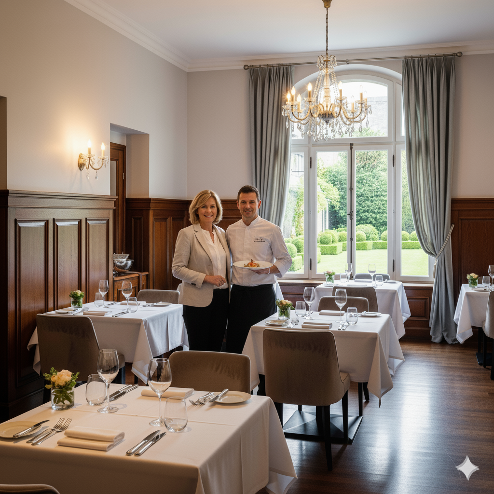

Chef expertos
Nuestros chef con experiencia internacional crean platos que sorprenden y deleitan el paladar.

Ingredientes frescos
Utilizamos ingredientes frescos locales de alta calidad para nuestros platos.

Ambiente único
Espacios únicos para momentos memorables con los que más aprecias.
Sobre nosotros
La Belle Cuisini nació en el 2020 con visión de ofrecer una experiencia gastronómica, para combinar sabores tradicionales con técnicas modernas.
Cada plato es preparado con calidad y dedicación, utilizando ingredientes de calidad preparados por manos expertas de nuestros chef

Lo que dicen los clientes sobre nosotros
"Una experiencia culinaria excepcional. Cada plato era una obra de arte y el servicio fue impecable."- María G.